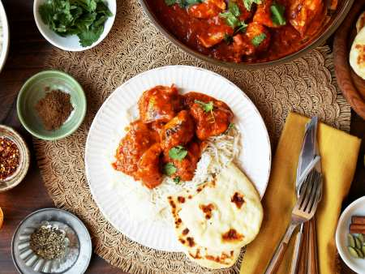
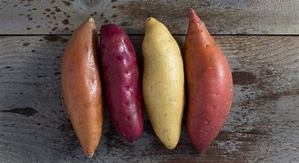

COLLECTION
HOw TO MAKE
GARLIC BREAD
Looking to seriously up your garlic bread game? try this
recipe for a classic toasty loaf. it's golden brown with
curusty edges, extra-garlicky,and a little cheesy. What's
not to love? By Heather Baird